АРКАН I · 1

1 Аркан — Маг
Первопроходец, Создатель реальности, Лидер
Меркурий · Воздух / Огонь
Подробная расшифровка →
АРХЕТИПЫ ВСЕЛЕННОЙ
Старшие арканы — это 22 фундаментальные энергии бытия. Дата твоего рождения кодирует 10 ключевых позиций арканов, определяющих таланты, финансовый канал, кармические уроки и высшее предназначение души.
Первопроходец, Создатель реальности, Лидер

Хранительница тайн, Интуит, Примиритель
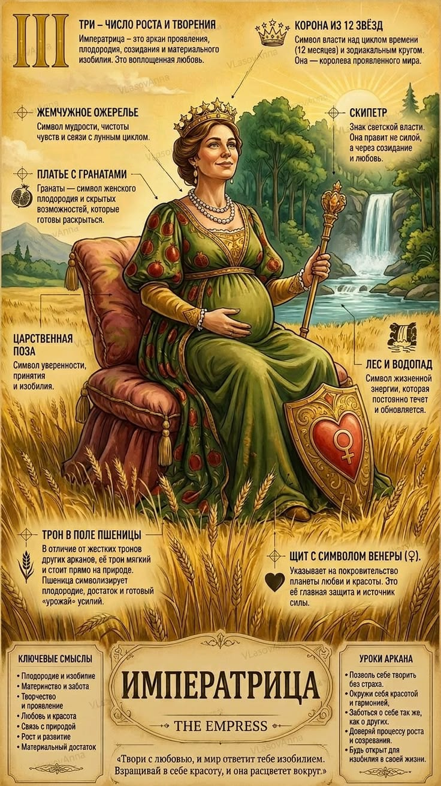
Хозяйка, Мать, Воплощение плодородия и красоты

Правитель, Стратег, Организатор, Защитник
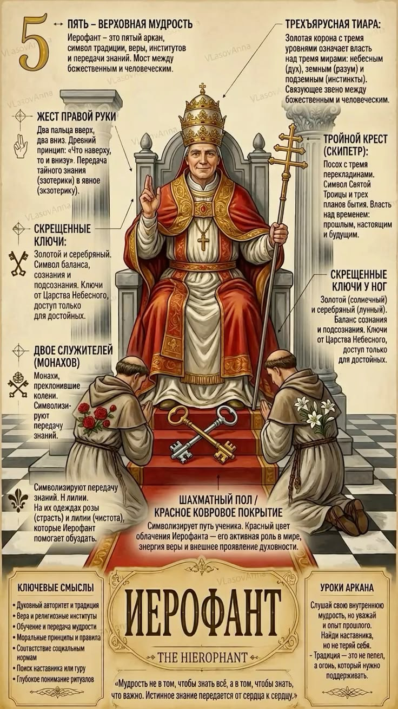
Учитель, Наставник, Хранитель законов и традиций

Эстет, Романтик, Партнер, Миротворец

Победитель, Воин, Двигатель прогресса, Путешественник
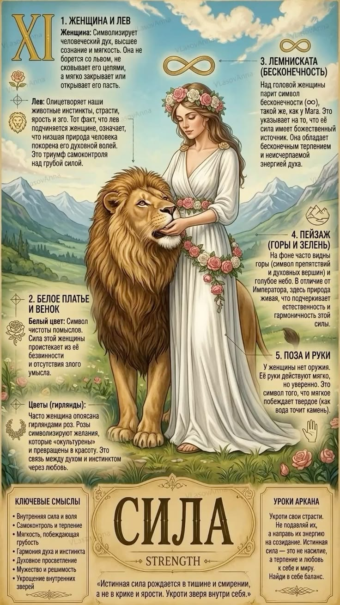
Судья, Законодатель, Координатор кармы, Аналитик
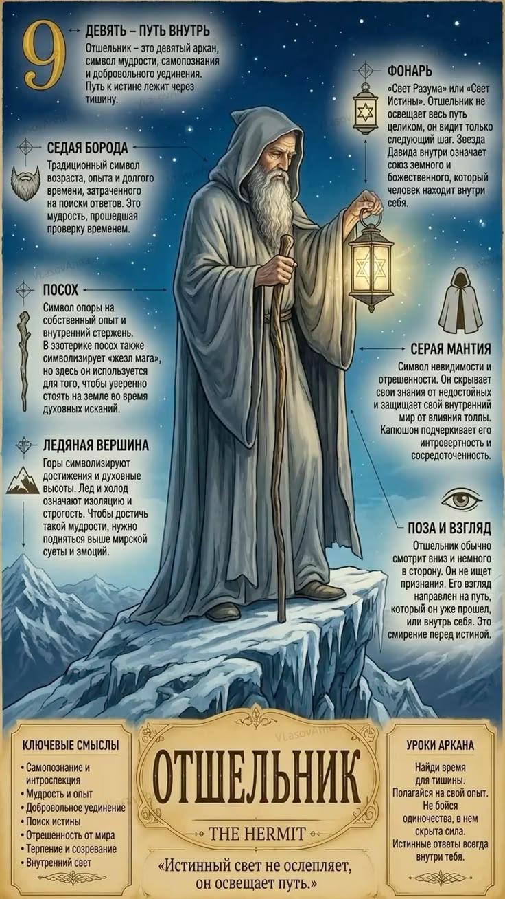
Мудрец, Ученый, Мыслитель, Философ

Счастливчик, Баловень судьбы, Путешественник по волнам жизни
Богатырь, Лидер изменений, Укротитель стихий, Энерджайзер
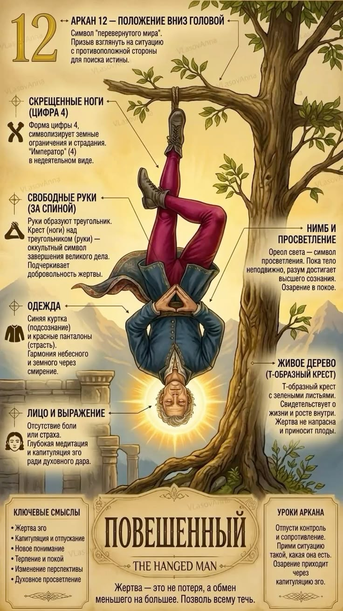
Новатор, Эмпат, Альтруист, Провидец

Трансформатор, Реформатор, Феникс, Катализатор перемен

Алхимик, Целитель, Миротворец, Ангел-хранитель
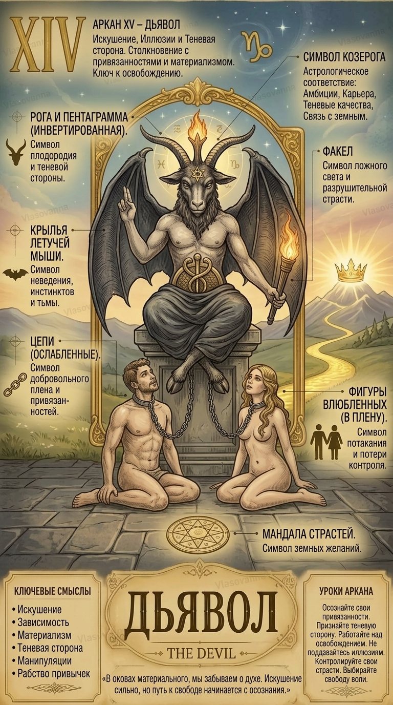
Магнетическая личность, Маг материи, Проницательный стратег
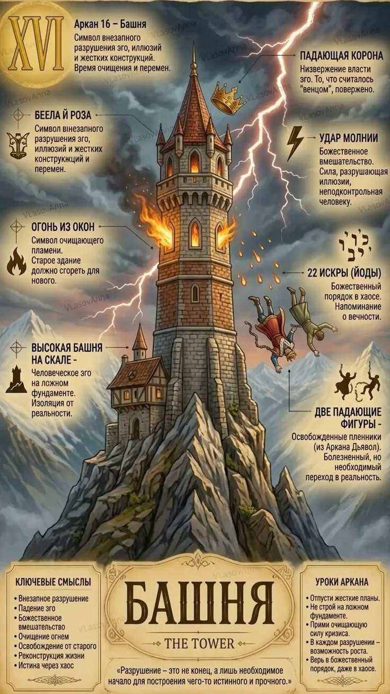
Освободитель, Архитектор нового мира, Пробуждающий лидер
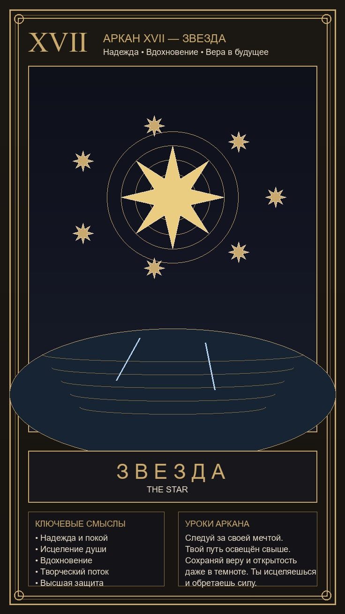
Звезда, Вдохновитель, Творец, Путеводный маяк
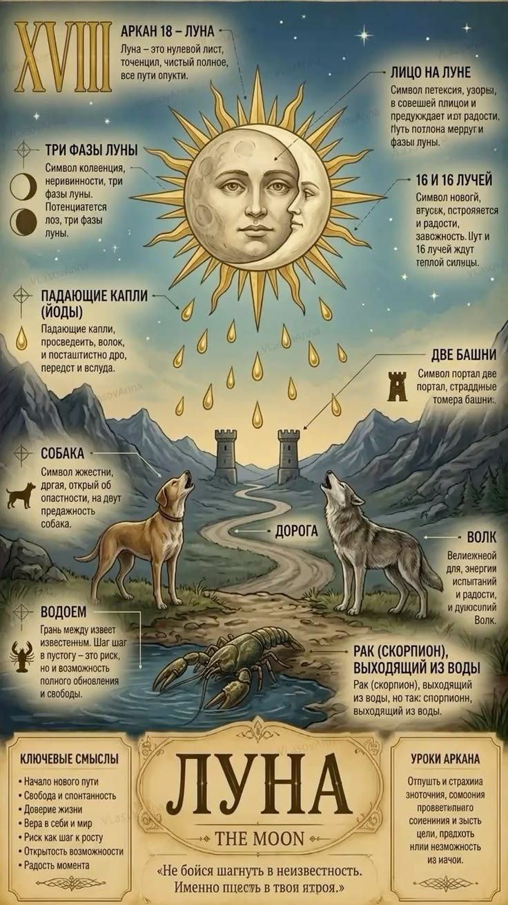
Мистик, Волшебник мысли, Психолог глубин, Сновидец
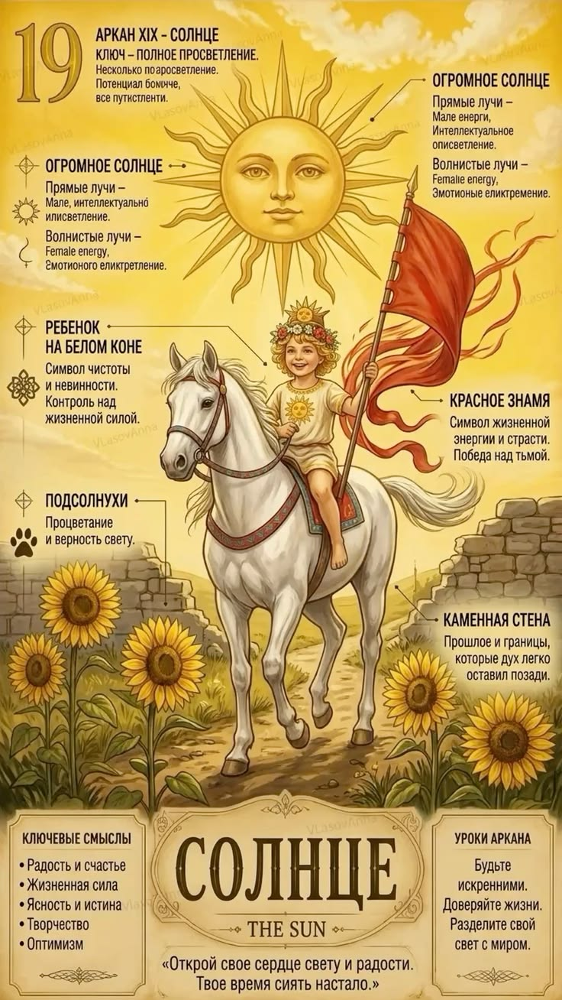
Солнечный лидер, Меценат, Вдохновитель, Источник тепла
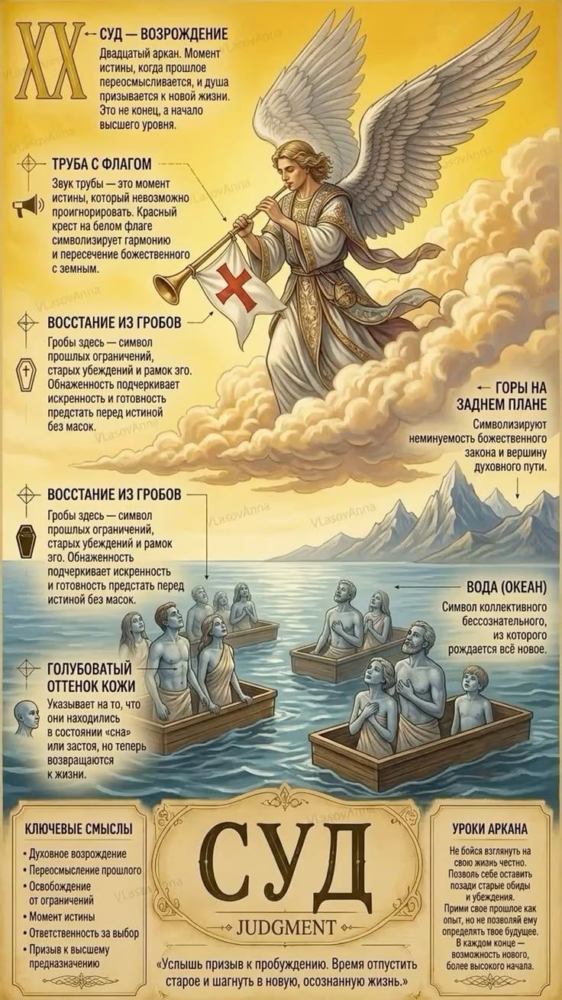
Голос предков, Пробужденный, Целитель рода, Вестник
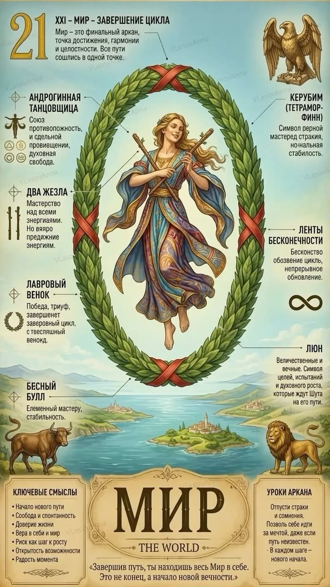
Человек мира, Космополит, Миротворец, Глобальный стратег

Вольный странник, Мудрый ребенок, Новатор вне системы
В основе расчетов лежит классический нумерологический метод редукции чисел к 22 Старшим Арканам Таро (модуль 22). Каждый человек несет в себе не один аркан, а целую матрицу из 10 ключевых энергий: